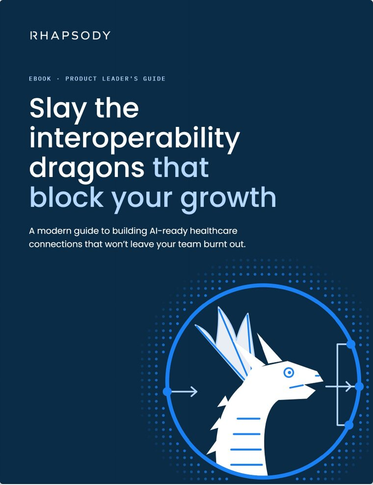
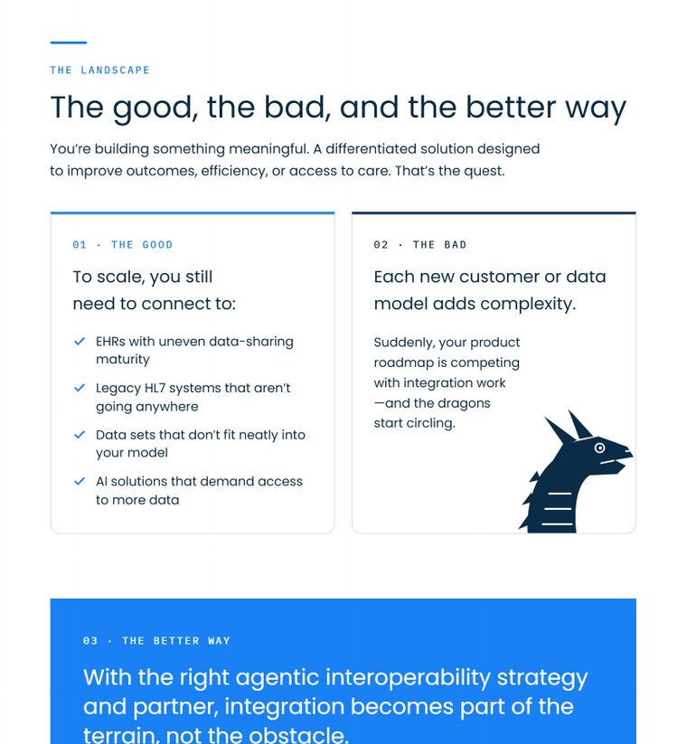
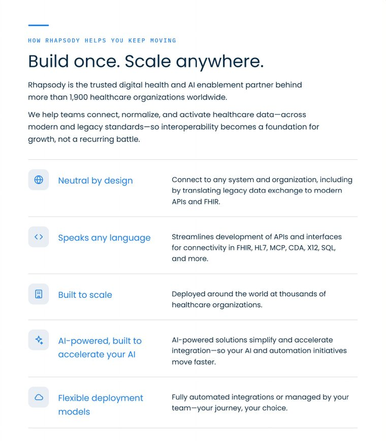
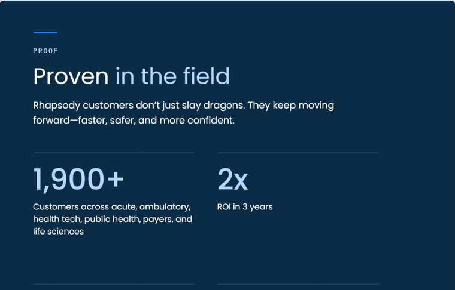

Ebooks
The system for Rhapsody ebooks, taken from the ebooks updated in November 2026, with Slay the interoperability dragons as the reference. Every ebook uses the same page system, color roles, and components; only the campaign illustration and one enumerated page change from ebook to ebook.




The reference ebook, Slay the interoperability dragons (November 2026). The full PDF is in examples/ebooks/ in the design system repository. It predates three of the rules below: new ebooks add the logo to the footer, use FY27 library icons, and drop the arrow from the CTA pill.
Template pages
Two interior pages at 45%: a light content page (photo slot, feature rows, takeaway) and a navy proof page. Figures are placeholders; use verified stats only.
Page system
- Letter-proportion pages, 816 × 1056px. Every interior page has a fixed padding of 56px top, 60px sides, 72px bottom. Content is a single flex column; the page’s closing block uses
margin-top:autoso it pins to the bottom. - Header stack opens every interior page: the 44 × 3px Rhapsody Blue rule, an IBM Plex Mono eyebrow (12px, 500, 0.17em tracking, uppercase, blue), the H2 (Poppins 400, 36px, line height 1.18, navy), then an intro paragraph (16px, line height 1.6, max width about 600px).
- Running footer on every interior page, 28px from the bottom: the logo at left (108px wide, the minimum size: the primary logo on light pages, all white on navy pages), then the ebook title, and the two-digit page number at right, in Plex Mono 10px uppercase with 0.14em tracking, gray #7E858C. The logo appears once on every page: the cover and the CTA page carry it in their layouts and have no footer.
- Navy pages: the cover and the final CTA page are full-bleed navy; proof and stat pages may be navy too. On navy, the rule, eyebrow, footer, and accents switch to light blue #B4D8FF.
Color roles
| Color | Role |
|---|---|
| Navy #0B2C47 | Body text; the “weight” color for the cover, dark pages, and dark panels |
| Rhapsody Blue #1A81F4 | On light pages: eyebrows, rules, icons, checkmarks, card top borders, stat numerals, and the emphasis span in a headline |
| Light blue #B4D8FF | On navy: headline spans, stat numerals, eyebrows, rules, and the footer |
| Neutrals | Gray-blue #E8EDF2 for soft panels and the icon tile #E9EDF2; light gray #D9DFE6 for 1px dividers and card borders; dark gray #7E858C for secondary labels. Light panels carry navy text, with one blue sentence span per panel for emphasis. |
Components
| Component | Treatment |
|---|---|
| Cards | Square top with a 3px colored top border, bottom corners rounded 12px (border-radius:0 0 12px 12px), 1px #D9DFE6 border. Card body 13.5px, line height 1.45. |
| Image slots | Rectangular photo, same bottom-only 12px radius, between the intro and the content, 260–330px tall |
| Icon tiles | The standard tile: 44 × 44, 11px radius, #E9EDF2, with a 24px FY27 library glyph in Rhapsody Blue (.icon-tile). For feature lists, benefit grids, and card headers. |
| Feature rows | Three columns: 44px icon tile | about 220px blue H3 at 18px (Poppins 400) | description. Rows divided by 1px #D9DFE6 lines; no boxes. |
| Checklists | A 16px Rhapsody Blue check at stroke 3, in a two-column grid; no boxes |
| Stat callouts | Poppins 500 at 52–64px, Rhapsody Blue on light pages, light blue on navy, with a 15–16px caption below. On navy pages, stats sit in a two-column grid separated by 1px white-at-20% top borders. |
| Pull-quote and closing panels | A navy or Rhapsody Blue block with 17–26px white text. On navy, the second half of the sentence turns light blue (the “turn”); on blue, the text stays all white. |
| CTA button | The pill: 999px radius, Rhapsody Blue fill, white Poppins 500 15px, 13 × 26px padding (44px tall). No arrow in the pill. |
| Campaign badges | Campaign-specific numbered badges (for example navy “shields” with white Plex Mono numerals) for the enumerated field-guide items only |
The bottom-only 12px radius is the ebook’s repeating shape, on image slots, cards, and panels. But each page has at most one boxed element: a card grid counts as one, and so does a single panel or callout. Lists, checklists, and feature rows stay open, divided by hairlines. Image slots are frames, not boxes.
Typography
- Poppins for all display and body text. IBM Plex Mono only for eyebrows, labels, footers, and numerals used as labels.
- Headlines are Poppins 400. Only the cover H1, the CTA H2, and stat figures are 500. Nothing anywhere is heavier than 500.
- Body 15–16px at line height 1.55–1.6; card body 13.5px at 1.45.
- Small section lead-ins (“You need to”) are Plex Mono, 12px, uppercase, 0.14em tracking, gray #7E858C.
text-wrap:balanceon H1 and H2;text-wrap:prettyon long callouts.
Imagery and the logo
- Campaign illustration (for example the dragon): the approved art for that campaign only. Hero scale on the cover, bleeding off the right or bottom edge; smaller on the final CTA page; and at most one or two cropped fragments (a head, a tail) as low-contrast accents on interior pages, never as the subject. It is the graphic device on the pages it appears on, so no dots or Aurora there. Campaign art isn’t one of the retired illustration styles, and it never moves into other Rhapsody materials.
- Photos sit in the image slots above, from the photo library.
- Logo: all white at 170–180px wide, top left on the cover and bottom left on the CTA page, paired with “rhapsody.health” in light blue outside the logo’s clear space. On interior pages, the logo is in the footer.
Structure
- Page order: Cover → Introduction → Landscape → Challenge → Enumerated field guide → What to look for → How Rhapsody helps → Deployment choice → Proof (stats) → CTA.
- Each page ends on a short takeaway sentence with a blue span (light blue on navy), pinned to the bottom, never on trailing content.
- Eyebrows are functional section names (Introduction, The landscape, Proof), not the campaign metaphor. The metaphor lives in H2s and callouts.
- The campaign-specific device (badges and meta-labels such as “Breathes” and “Weak to”) is isolated to the one enumerated field-guide page, so it can be swapped per ebook without touching the system.
- Ebooks are often read on phones as PDFs: check a page at phone width and keep body at 15px or more.
A few details from the source ebooks follow the rest of the system here. Icon tiles use the FY27 library glyph at 24px with its own stroke (the 22px icon at stroke 1.7 is the retired weight). Stat numerals on navy are light blue, not Rhapsody Blue. The CTA pill has no arrow. Section lead-ins are set in the mono, because capitals are reserved for mono labels. The tile fill is the #E9EDF2 token. And per the owner: the logo appears once on every page (footer on interior pages), and each page has at most one boxed element.